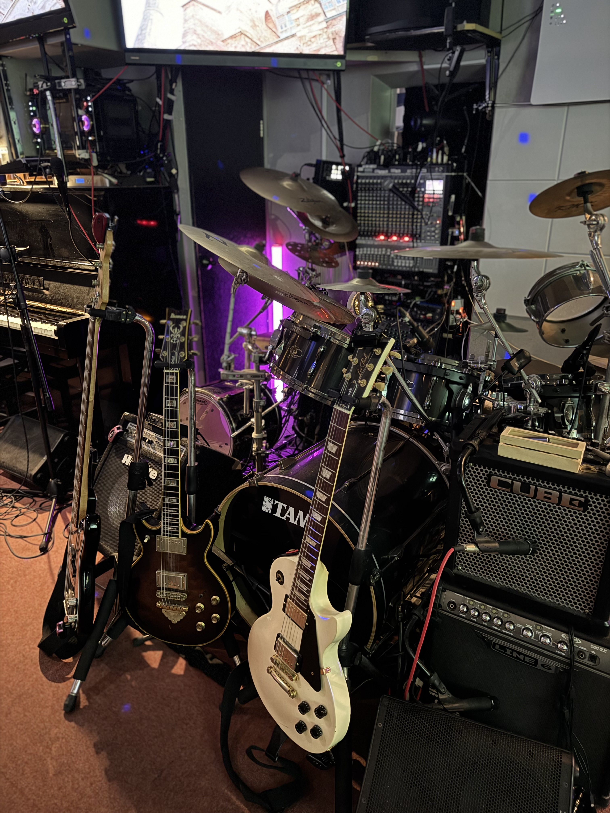

お知らせを見る
お店からのお知らせ、公式LINE、Instagramを確認できます。
お知らせへ使いたい機能を選ぶと、そのページへ移動できます。
設定の「トップボタン表示設定」から、メニュー・マイ曲リスト・曲ガチャなどを自由にトップ画面へ表示できます。
お店からのお知らせ、公式LINE、Instagramを確認できます。
お知らせへ飲み放題、ボトル、グラス、フードなどを確認できます。
メニューへ曲名だけでも登録できます。キー、タグ、メモはあとから編集できます。
曲を登録する曲名、歌手名、タグ、メモで検索できます。タグ選択から探すこともできます。
マイ曲リストへ歌う曲に迷った時、マイ曲リストから次の候補を選べます。
曲ガチャへ記録した回数をもとに、自分がよく歌う曲をランキングで確認できます。
よく歌う曲へお気に入りにした曲を匿名で共有し、DRUMで人気の曲を確認できます。
みんなのお気に入り曲へ日付ごとに歌った曲を残せます。記録ごとのメモも使えます。
歌った記録へ今日のセットリスト、ドリンク記録、来店メモを残せます。
今日の記録へ飲み放題、グラス、ボトルの記録ができます。よく飲むものはお気に入り登録できます。
ドリンク記録へ今日歌った曲をまとめてコピーできます。メモアプリやLINEに貼り付けて残せます。
セットリストへご来店中の運だめしです。サービス表示は当日限り有効です。
DRUMガチャへJSON保存やコピペ用テキストで、曲リストを残したり復元したりできます。
バックアップへアクセス、営業時間、公式LINE、問い合わせ先などを確認できます。
店舗情報へカラオケと楽器を一緒に楽しむためのルールやマナーを確認できます。
遊び方へ公式LINE、Instagram、YouTubeなどのリンクを確認できます。
SNSへ店内の様子や出演動画を、このアプリ内で再生できます。
YouTubeへ予約、貸切、イベント利用などのお問い合わせに使えます。
問い合わせへご来店中に確認していただきたいお知らせや、SNSへのリンクをまとめています。
最新情報やお知らせは公式LINEからもご案内できます。
公式LINEを開く@music_saloon_drum
現在、画像のお知らせはありません。
イベント情報や店内の様子はInstagramでもご案内できます。
Instagramを開く@musicsaloondrum
ご来店中のお楽しみ。ドリンクまたはおつまみサービスが出るかもしれません。
1端末につき1日1回まで回せます。サービス表示が出た場合は、当日中にその画面をスタッフにお見せください。
サービス表示が出た場合は、ドリンク1杯・おつまみサービス・500円割引のいずれかとしてご利用できます。
サービス内容は営業状況によりスタッフ判断となる場合があります。
同じスマホでは、その日一度回すと翌日まで回せません。日付は端末のブラウザ内に保存されます。
曲名だけでも登録できます。歌手名・キー・メモはあとから追加できます。
マイ曲リストはこの端末のブラウザだけに保存されます。
他のお客様に見られたり、お店側へ自動共有されたりすることはありません。
ブラウザのデータ削除、機種変更、プライベートブラウズ利用時などに消える場合があります。
曲が増えてきたら、念のためバックアップをおすすめします。保存したJSONファイルがあれば、端末のデータが消えた後もここから復元できます。
曲名・歌手名・タグ・メモから探せます。タグはボタンから選択できます。
JSONは曲リスト・歌った記録・タグ・メモなどをまとめて復元できます。テキスト出力はメモアプリやLINEに貼る確認用として使えます。
機種変更やブラウザデータ削除に備えて、曲リストと記録の復元用ファイルを保存できます。
保存しておいたJSONファイルを選ぶと、曲リストと記録を復元できます。
1行に1曲ずつ貼り付けできます。例：海 サザンオールスターズ 原曲キー。曲名だけでも登録できます。検索用よみ（曲名・歌手名・別名）を入れる場合は4つ目に入れてください。
| 曲名 | 歌手名 | キー | メモ | 操作 |
|---|
まずは曲名だけで保存できます。歌手名・キー・タグ・メモは、わかる範囲であとから整えれば大丈夫です。
入力が面倒な時は、曲名だけ入れて「マイ曲リストに保存」を押してください。
入力内容はこの端末に自動保存されます。
曲名と歌手名が写った写真から、登録したい1組だけを選んで読み取れます。
複数曲が写った写真は、登録したい曲名と歌手名の部分だけを指で囲ってください。文字を大きく切り取るほど、読み取りやすくなります。
1行目を曲名、2行目を歌手名として入れます。読み取りが違う場合は、ここで直してから入れてください。
マイ曲リストに保存した曲から、次に歌う曲をおすすめします。
歌う曲に迷った時に使えます。デュエット曲を候補に入れるかどうかも選べます。
一人で歌う時はチェックを外しておくと、デュエット曲は候補から外れます。
マイ曲リストを開くその日に歌った曲を日記のように残せます。日付を選ぶと、いつ何を歌ったか確認できます。
マイ曲リストの「記録」ボタンを押すと、今日の記録に追加されます。
0曲
同じ曲を何度歌っても、その日の記録として残せます。
この日付に、歌った曲を追加します。
マイ曲リストにない曲は、曲名だけでも登録しながら記録できます。
ご来店中のドリンクや、ちょっとしたメモを残せます。健康管理や飲みすぎ防止が気になる方にも使えます。
マイ曲リストで「記録」を押した曲が、今日のセットリストとして残ります。
0杯
健康管理や飲みすぎ防止の目安として、自分用に今日飲んだものを残せます。
この端末のブラウザ内に保存されます。
ドリンク記録とメモは、この端末のブラウザ内に保存されます。
他のお客様やお店側へ自動共有されません。
マイ曲リストの「記録」ボタンから、自分がよく歌う曲を自動でランキング表示します。
お気に入り曲ごとのボタンから、該当曲の共有場所へ直接移動できます。
マイ曲リストで「記録」を押すと、その曲の回数が増えます。歌った記録をもとに、自分の中で頻度が多い曲を上から表示します。
ランキングもこの端末のブラウザだけに保存されます。
別の席や別のお客様からは見えません。
お気に入り曲を匿名で共有し、DRUMで人気の曲として表示します。
営業時間やアクセスなど、必要なときに確認できます。

10名様以上のご利用で、お一人様3,500円から承ります。イベントやバンド利用などは電話またはメールでお問い合わせください。
予約、貸切、イベント利用などはこちらからお問い合わせできます。
問い合わせを開くカラオケと楽器を一緒に楽しむためのルールやマナーをまとめています。
遊び方を見るこのページ内で再生できます。
カラオケと楽器が共存するDRUMで、みんなが気持ちよく楽しむためのルール＆マナーです。
当店はカラオケと楽器が共存する空間です。カラオケに合わせて店主やスタッフ、お客様が楽器で参加し、一緒に盛り上がれるのがDRUMの楽しさです。
歌う方にとって、その1曲は大切な1曲です。楽器で参加する方は、歌う方の気持ちや雰囲気に寄り添って演奏してください。
Q. 楽器を演奏したいんですが…
A. カラオケを一時停止しての生演奏、またはカラオケや音源に合わせて演奏できます。他のお客様の歌に合わせて演奏する時は、挨拶やアイコンタクトで「一緒にやります」というコミュニケーションを心がけてください。
Q. 他のお客様の歌に合わせてコーラスやハモリを入れたい。
A. いきなり入るのではなく、事前の確認やアイコンタクトを心がけてください。気心の知れた方同士の場合は、その限りではありません。
Q. 知っている曲なので、主旋律を一緒に歌いたい。
A. マイクを持って主旋律を歌うことは、基本的にご遠慮ください。歌っている方の1曲を大切にしながら、拍手や手拍子などで一緒に楽しんでください。
電話またはメールでお問い合わせください。フォームからはメールアプリが開きます。